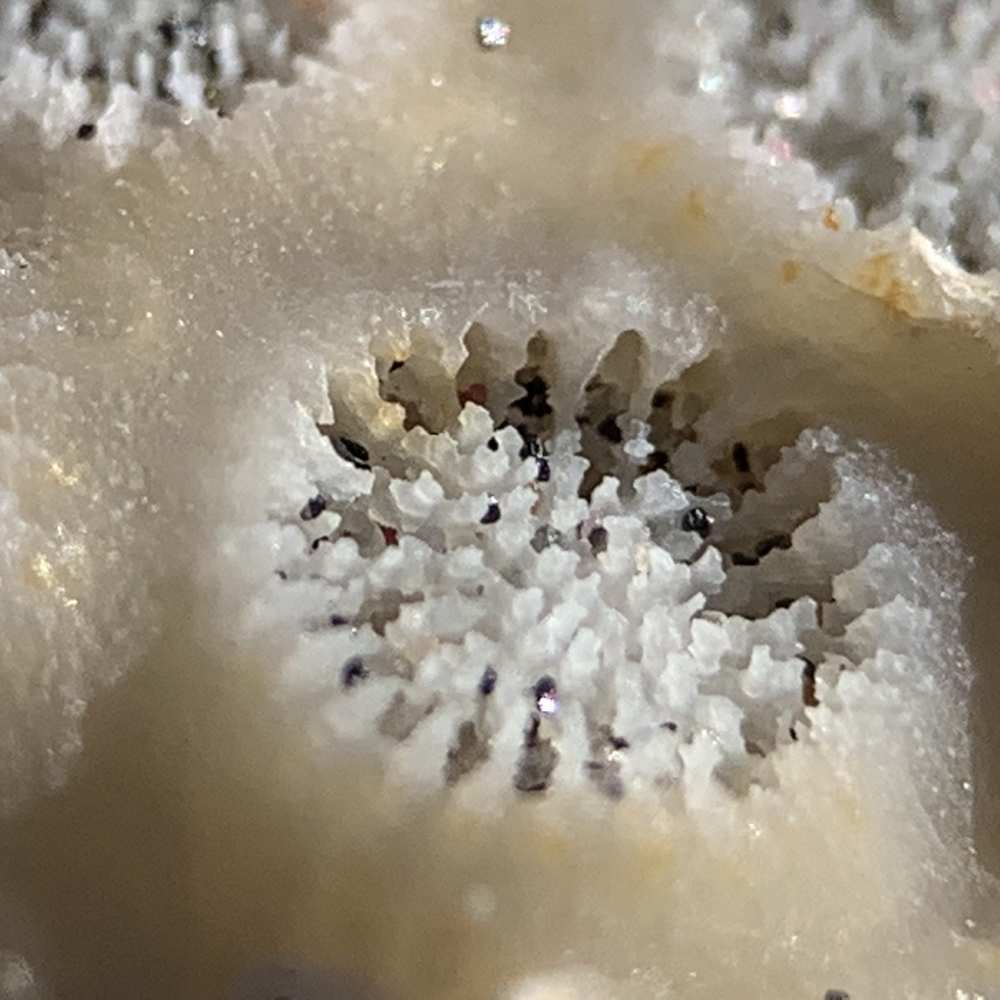

Gosia.
Malgorzata Mosiek - Professional Coach
Coaching is like looking into a mirror that reflects where you want to be, where you currently are and shows the path how to ‘bridge the gap'.
About coaching
As a coach I will not tell you what to do. I will partner with you to set and achieve the goals. Setting and achieving goals is easy to understand and hard to master. The coaching outcome is to maximize personal and professional potential, get clarity on areas to improve, identify and reach goals. Coaching allows you to overcome the feeling or being ‘stuck’.
About me as a coach
I have been working with groups and individuals supporting them in continuous improvement, setting up and achieving goals and reaching their full potential. My life experience and education provide me with broad and unique perspective. I have changed profession number of times from arts, through finances to IT. I worked for nonprofits, startups, and corporate organizations. I relocated from Europe to the US, building a new life and adjusting to a new culture.
I partner with my clients in discovery of how their desired future would look like and support them to reach and overcome limitations.
Areas of Expertise
Informaton Technology
Career
Life
Transitions
Coaching style:
Supportive
Defining path forward and support mechanisms needed to face potential challenges.
Direct
Challenging assumptions and encouraging to go beyond the comfort zone.
Insightful
Exploring values, beliefs, needs and wants.
Transformational
Discovering new perspectives, new skills, and unutilized potential.
Testimonials
Chris B. IT professional
As someone who was not aware of what coaching was or what I should expect from it, I started the process with Gosia very apprehensively. She met with me biweekly over the course of several months, and the progress I made during that time was a pleasant surprise. We discussed a pretty wide range of topics, from personal goals and desires for professional growth to more deep topics like familial struggles and long-term life goals. Along the way, I began to shift my view of the coaching from a view of reluctant sharing to a more active one where I verbalized my thought process and listened to Gosia as she pushed me to identify the themes and values of the topic at hand. One example that sticks with me is one where I was sharing some of my career goals and how I felt frustrated by people and tasks that were distracting me from focussed work. Over the course of the session, Gosia helped me pause and introspect on the frustration and identify that the cause was not the people but my own lack of advocating for myself (being able to say no). I was shifting the blame of my lack of focus onto others, and it was impacting my long term goal of being able to provide mentorship to coworkers and acquaintances. After my sessions with Gosia concluded, I felt a renewed desire to make active choices now to start making progress towards my long-term goals instead of passively planning 5 years away. I started looking into how I can leverage my network of friends and coworkers along with my professional skills to volunteer at local non-profit organizations and invest in the lives of college students and recent graduates. I really recommend that you give coaching with Gosia a try!

Matt H. IT professional
Gosia is great at helping me hold a mirror up to myself. This encourages me to assess more objectively thought patterns and actions I have, allowing me to either let go of or enforce them. Through this, I am more able to effectively focus on working towards both my short- and long-term goals.
My credentials:
Completed ICF (International Coaching Federation) approved professional coach certification at the Duquesne University. I am a memeber of the ICF. I adhere to ICF confidentality and ethics standards.
My services
Coaching packages
Number of sessions depends on the session length. Frequency of sessions and number of hours will determine engagement length, that can take from 3 to 12 months.
- 'Free session'
- Introductory session to coaching.
Get to know each other. - 30 minutes of coaching
- ---
- 1 session
- ---
-
$ 0
- 'Bronze'
- Short term goals
- ---
- 4 hours of coaching
- ---
- 4 1hr sessions
- ---
-
$ 320
- 'Silver'
- Short and long term goals
- 8 hours of coaching
- Bonus 30 minutes Session
- Choice of 30/60 minutes sessions
- ---
-
$ 640
- 'Gold'
- Short and long term goals. Major changes.
- 12 hours of coaching
- Bonus 1hr session
- Choice of 30/45/60 minutes sessions
- Mail Support
-
$ 980